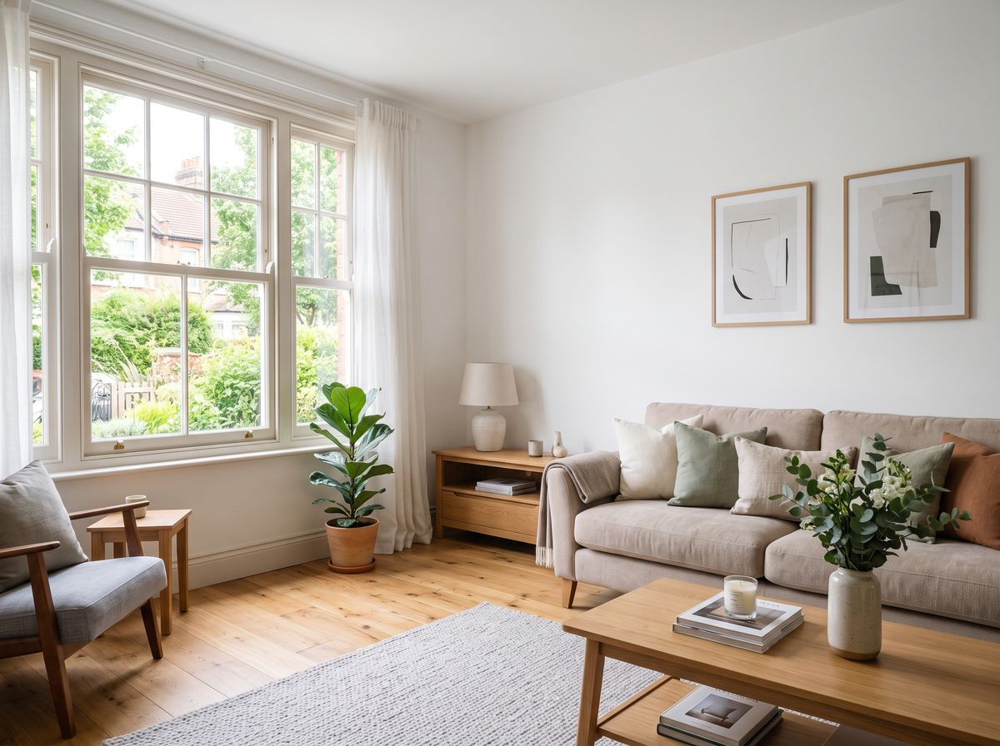
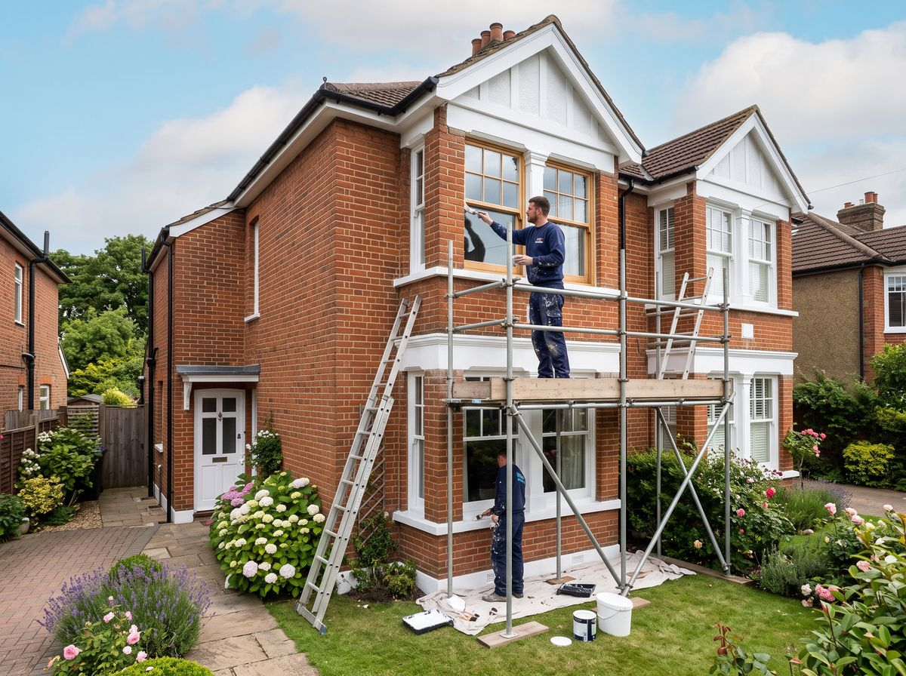
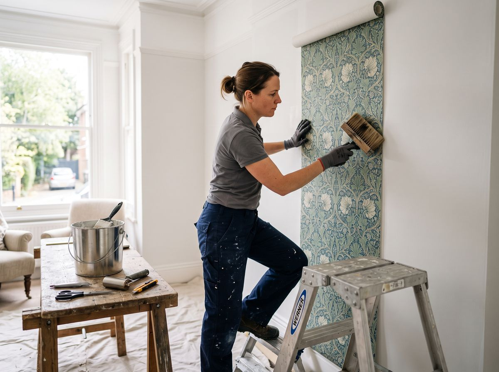
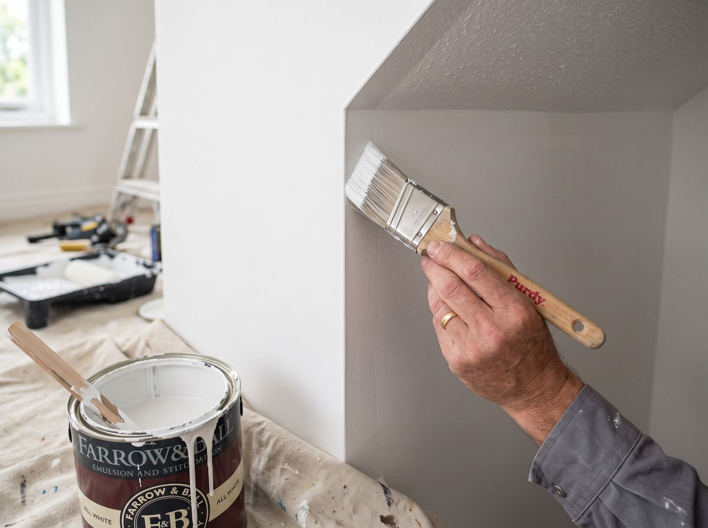

Painting and decorating, inside and out.
From a single freshly painted room to a full exterior, Greg handles each stage with care — proper preparation, tidy working, and a finish built to last. Below is what the work covers.

Interior painting & decorating
Walls, ceilings, woodwork, doors and feature rooms. Careful preparation — filling, sanding and priming — so the topcoat goes on smooth and stays looking good. Whether it's one room, a full house or a flat being prepared for sale, the approach is the same: tidy, methodical work with a clean finish.

Exterior painting
Masonry, render, woodwork, window frames, doors, fascias and garden walls. The right preparation and weather-appropriate products keep exterior finishes looking sharp and standing up to the Greater Manchester weather.

Wallpapering
Hanging and pattern-matching wallpaper, with the surface preparation that makes the difference between a tidy result and a flawless one. Cross-lining where it's needed so patterns sit true and edges stay flat.
Spray painting
A smooth, even coating for suitable surfaces — a fast, consistent route to a high-quality finish where the method fits the job. Greg will advise on whether spraying suits your project.
Small DIY & repairs
Door repairs, minor carpentry fixes, and the finishing touches that complete a decorating job properly. As customers have found, Greg is happy to take on the small things that make the whole project right.
Full-house & pre-sale redecoration
Complete interior and exterior redecoration — ideal when you're refreshing a whole home or preparing a property to go on the market. Clear start and finish dates, kept to, with a finish that shows the property at its best.
Clear from the first conversation to the finished job.
Greg believes communication is the key to a successful job. He takes time to understand exactly what you want, talks through what's included, and keeps you informed through each stage.
- Thorough preparation — the part that makes a finish last
- Clear on scope, timing and what to expect
- Tidy on site and respectful of your home
- A finish Greg is happy to put his name to

Talk it through with Greg.
Not sure which approach your job needs? A quick call will usually sort it — Greg will talk you through the options and arrange a no-obligation quote.